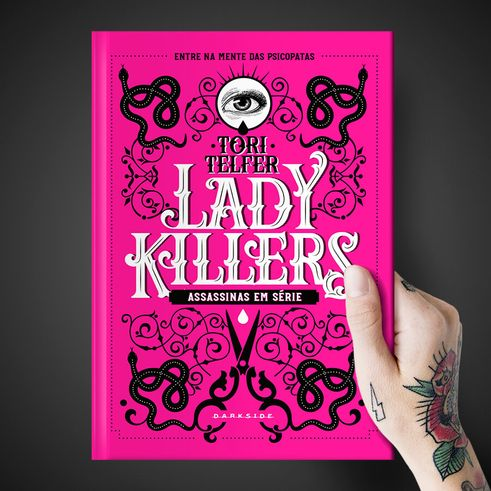

Inspirado na coluna homônima da escritora Tori Telfer no site Jezebel.com, Lady Killers: Assassinas em Série é um dossiê de histórias sobre assassinas em série e seus crimes ao longo dos últimos séculos, e o material perfeito para você mergulhar fundo em suas mentes. Com um texto informativo e espirituoso, a autora recapitula a vida de catorze mulheres com apetite para destruição, suas atrocidades e o legado de dor deixado por cada uma delas. As histórias são narradas através de um necessário viés feminista. Telfer dispensa explicações preguiçosas e sexistas e disseca a complexidade da violência feminina e suas camadas. A autora também contesta os arquétipos — vovó gentil, mãe carinhosa, dama sensual, feiticeira traiçoeira, entre outros — e busca entender por que as mulheres foram reduzidas a definições tão superficiais.